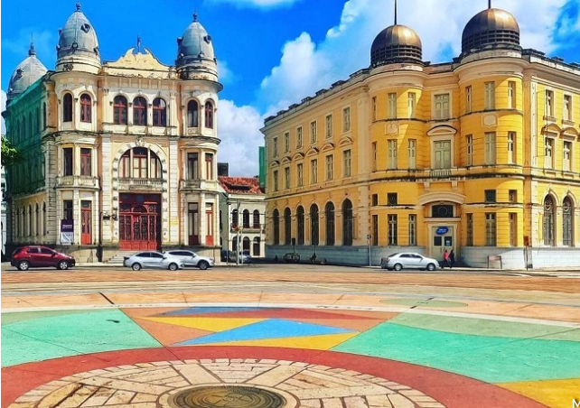

Pontos Turísticos de Recife
Venha conhecer Recife!
Marco Zero
O Marco Zero em Recife é um dos destinos históricos mais importantes do nordeste do país. A região reúne atrações históricas e culturais, centro de artesanato e ótimos restaurantes. Além disso, é o principal local do carnaval de Pernambuco, reunindo música, alegria e muita festa. A seguir, saiba mais detalhes sobre o destino.
O espaço surgiu junto à construção da cidade e também é responsável por preservar grande parte da história local. Pela região, é possível apreciar construções da época do Brasil Colonial, assim como estátuas, parques e monumentos históricos.
Marco Zero

A Ponte Maurício de Nassau que foi construída exatamente onde existiu a primeira ponte da América Latina em 1643. A construção atual é de 1917. Quatro estátuas de ferro decoram as extremidades da ponte. Elas foram feitas na França em 1920. São elas: as deusas da Sabedoria, da Agricultura, do Comércio e da Justiça. No meio da ponte tem outra escultura em concreto fundido do poeta Joaquim Cardoso, que faz parte do Circuito da Poesia na cidade.
Apesar do trânsito, vale a pena caminhar pela parte destinada a pedestres e observar os pescadores, catadores de caranguejos e o vai e vem urbano em uma cidade marcada pelos traços europeus. Esse passeio é para ser feito de dia.À noite, a região fica bem esquisita, exceto se for carnaval ou dia de domingo, quando algumas vias ficam fechadas para carro, e as pessoas pedalam entre a Praia de Boa Viagem até o centro do Recife.
Rua Bom Jesus

A Rua Bom Jesus representa bem a época em que Recife virou a casa dos holandeses, durante sua ocupação no Brasil (1630-1654). Ela é uma das ruas mais antigas da capital pernambucana e uma das mais preservadas também.
Os prédios são coloridos e rendem ótimas fotos. Essa Rua Bom Jesus é bem tradicional do Recife Antigo e, durante o carnaval, por exemplo, é passagem obrigatória de muitos blocos.
Aos domingos, uma feirinha movimenta a rua que abre espaço para artesãos mostrarem suas peças. Ela se transforma em um verdadeiro centro cultural, com música, comida e muitos turistas e locais aproveitando o espaço....etc.